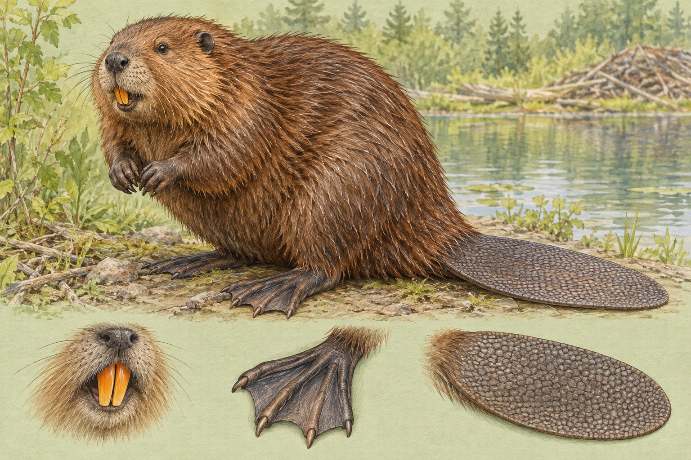
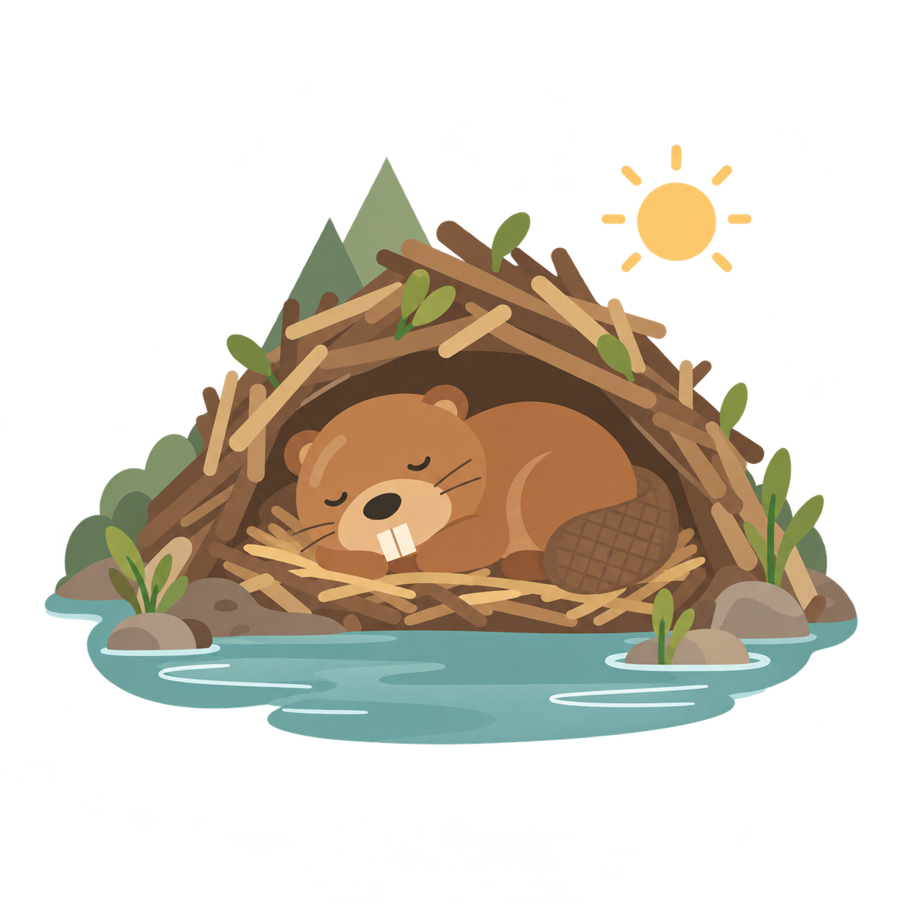
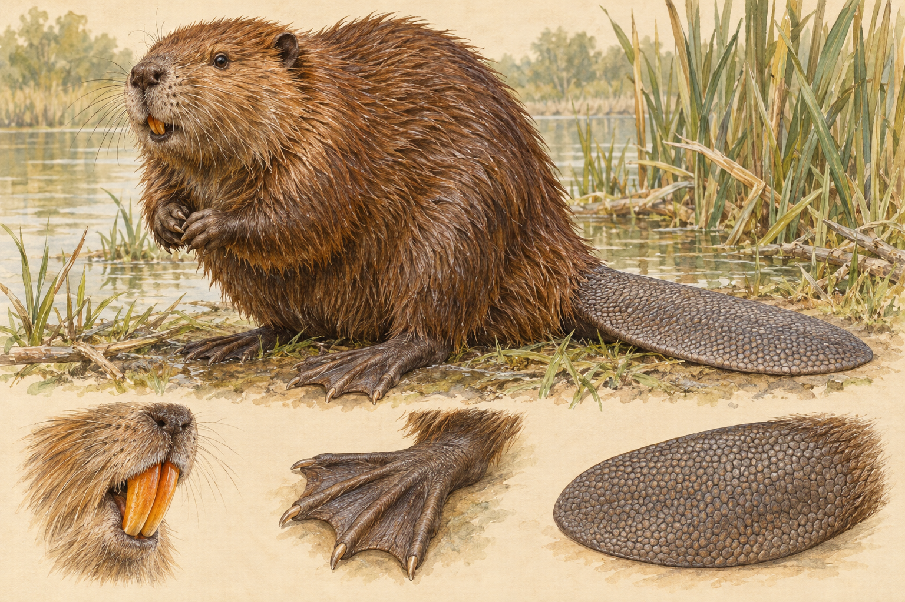

北美河狸
Castor canadensis
- 原生分布
- 北美洲，包含加拿大、美國與墨西哥部分地區；另有被引入其他地區的族群。
- 外觀特徵
- 身形厚實、四肢短，尾巴寬扁且帶鱗狀表面，後腳有蹼。毛色有深淺變化。
- 生活方式
- 活動於淡水環境，吃樹皮、嫩枝及水生植物；會依棲地條件築壩或利用岸邊洞穴。
A DAY AT THE LODGE

河狸多在黃昏與夜間活動，白天常待在窩或岸邊洞穴中休息。
插畫呈現常見生活情境，並非固定時刻表；活動時間會隨季節、棲地與干擾改變。
作息參考：密西根大學 ADW ↗MEET YOUR LAKESIDE NEIGHBOURS
兩種現生河狸，
同樣是湖邊的建築師。
大家常說的河狸「品種」，在生物分類上其實是不同的物種。目前現生河狸有兩種，都屬於河狸科、河狸屬。
河狸物種超級比一比 ↗
Castor canadensis

Castor fiber
SAME FAMILY, TWO SPECIES
牠們有哪些不同？又有哪些共同的河狸本領？
顯示全部 9 個比較項目
小螢幕可以左右滑動表格，並排看兩種河狸。
| 比較項目 | 北美河狸Castor canadensis | 歐亞河狸Castor fiber |
|---|---|---|
| 學名有不同 | Castor canadensis | Castor fiber |
| 原生分布有不同 | 北美洲；包括加拿大、美國與墨西哥部分地區。 | 歐洲與亞洲部分地區；部分現有族群來自復育。 |
| 資料列示體重有不同 | 約 13–32 公斤。 | 約 13–35 公斤。 |
| 尾巴形狀傾向有不同 | 寬扁、帶鱗狀表面。 | 同樣寬扁，通常較北美河狸狹窄；個體之間仍有差異。 |
| 毛色很相似 | 可見紅棕至黑棕色，不是每隻都一樣。 | 同樣有棕色深淺變化，毛色會因族群與個體而異。 |
| 門牙與腳掌很相似 | 橘色門牙持續生長；前腳能抓握，後腳有蹼。 | 同樣有橘色門牙及有蹼後腳，適應啃咬與水中生活。 |
| 主要食物很相似 | 樹皮、枝條、葉片與水生植物等植物性食物。 | 同樣以植物為食，會吃樹皮、嫩枝與水生植物等。 |
| 住家與水壩很相似 | 可建枝條窩或利用岸邊洞穴；水壩用來調整水位。 | 同樣會建窩、挖洞及築壩；是否築壩取決於棲地條件。 |
| 家庭生活很相似 | 通常由一對親獸與不同年齡的子代共同生活。 | 同樣常以家庭群生活，較大的子代也會協助照顧幼獸。 |
體重是來源列示的參考範圍，兩種河狸高度重疊，不能用來斷言哪種一定比較大。尾形只是一般傾向，毛色也不能單獨辨識物種；上方插畫為 AI 生成示意，並非按比例的鑑定圖。
橘色門牙
門牙持續生長，啃咬能幫助磨耗牙齒。
後腳有蹼
協助划水，搭配扁尾控制方向。
植物是主食
樹皮、枝條與水生植物都是食物。
家與壩不同
窩用來棲身；水壩幫助改變水位，並非每個棲地都需要築壩。
圖片為 AI 生成的特徵示意，細節不作為物種鑑定依據。野外辨識小提醒：兩種河狸外觀很相似，不能只憑毛色、體型或一張照片可靠判定物種。也別把水豚、海狸鼠或麝鼠當成河狸喔。
延伸閱讀：華盛頓州魚類與野生動物部門 ↗A YEAR AROUND THE LODGE
同一座小窩，
四種生活節奏。
從春日育幼，到冰下的冬季糧倉，左右滑動，看看每個季節的湖邊生活。
← 左右滑動，跟著河狸過四季 →
這是北半球溫帶、寒帶棲地的概略節奏。實際繁殖時間、食物與儲糧行為因物種、緯度及氣候而異；暖地的冬天不一定結冰，南半球的季節月份也不同。四季並不是所有河狸都相同的固定行程。
THE KNOWLEDGE COLLECTION
每一個「原來如此」，
都是重新認識自然的開始。
幾分鐘認識一個河狸祕密。收錄 Threads 短篇與主題筆記，讓好奇從小地方開始。
試試其他關鍵字，或回到全部知識。
THE BEAVER CHRONICLES
真實地點、歷史脈絡，
還有河狸與人類相遇的故事。
從天降河狸到濕地重生，沿著事件的起點、經過與後續，讀懂每一段真實故事。
目前沒有符合搜尋條件的長篇故事。
A LITTLE BEAVER CHALLENGE
五個小問題，看看你是不是
下一位河狸觀察家。
CURIOUS, WITH SOURCES
本站以自然保育機關、國家公園與動物園公開資料編寫。每則筆記標示適用物種及參考來源，避免把某地的觀察當成所有河狸的通則。內容為繁體中文整理，插畫為原創示意，並非物種鑑定圖。